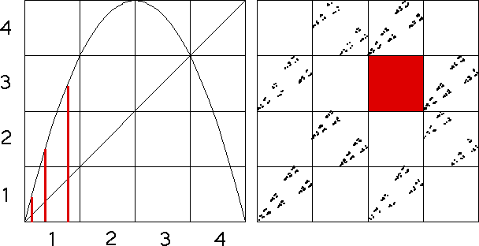

| From the graph of the logistic map, we see from bin1 (along the x-axis) this logistic map can iterate immediately to bin1, to bin2, and to bin3. (Above bin1 on the x-axis, the graph crosses through bin1, bin2, and bin3 on the y-axis.) So we see |
| from bin1 the logistic map cannot immediately iterate to bin4. |
| Recalling that the driven IFS applies the transformations in the order the bins are entered under iteration of the logistic map, we see |
| T4 cannot immediately follow T1. |
| As a result, in the driven IFS the square with address 41 must be empty. |
|  |
| Continue to Markov Example, bin 2. |
Return to Markov Partitions and Driven IFS.